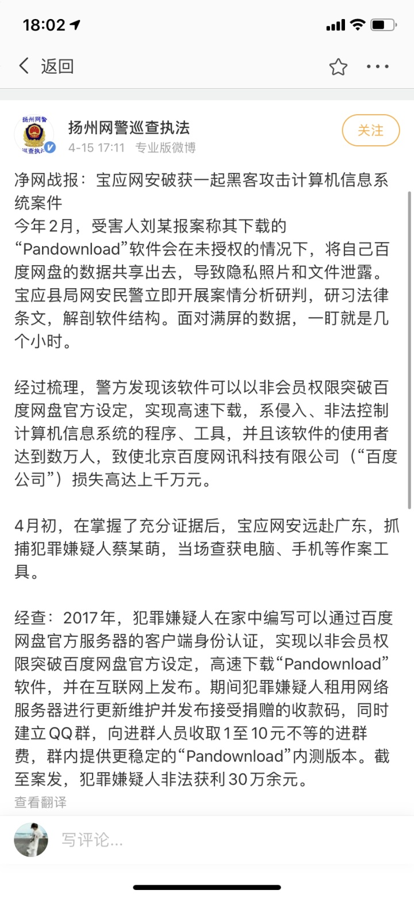
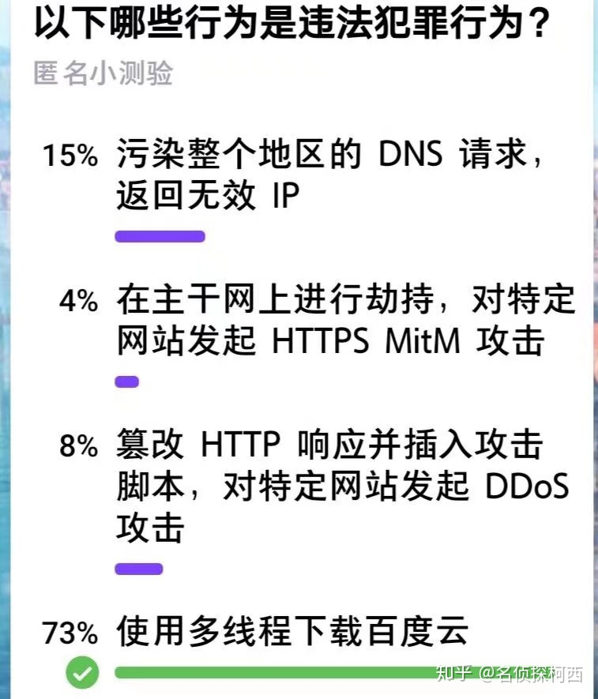
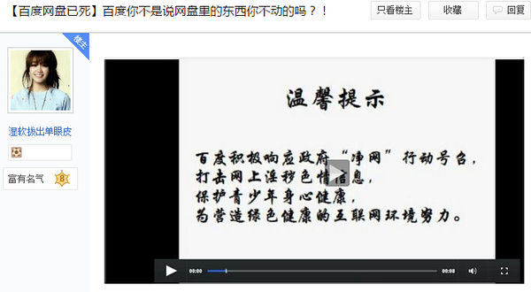

吃屎系列：资本家如何喂用户吃屎
前言
“客户就是上帝”——资本说出的话语言犹在耳，而事实却已经是大相径庭。今天的资本，常常借助自己的垄断地位，或者信息的不对称，对用户做了许多下作的事情。 我在此以一个观察者的角度，把资本如何喂大家吃屎的事情记录一下。 也借此希望大家不要忘记，缺乏监管的资本和缺乏监管的政府（公权力）相比，并不温和到哪里去。
TODO List
以下是尚未来得及整理的一些事情（还有一些不在列表里，是我没想起来）
- 华为（比较多）
- 京东 退换货二次出售（二手东名字来源）
- 西部数据 NAS（红）盘采用SMR技术
- IO DATA 采用廉价盘（疑似SMR）作为NAS存储用，并且定价高昂
- 知乎 故意破坏网页版的功能，引导用户下载App
- 滴滴打车
- 烧钱补贴占领市场后开始高额收费
- 大数据杀熟
- 美团
- 大数据杀熟：我被美团会员割了韭菜 「存档链接」
- Amazon
- 虚报预期到货日期
- 大数据杀熟始作俑者
- 亚马逊在Covid期间不仅强制要求员工无薪休假，并且如果员工感染冠病，病假是没有薪水发的。
- 亚马逊搞了个relief fund让公众捐款
- 携程网
- 大数据杀熟，两个人订房间，以前经常消费的人定价更高
- 三星
- 手机爆炸频发，但是打压用户不给赔偿
- 三星Note7“爆炸门”一年，给了我们什么样的思考？ 「存档链接」
- Wiki: 三星Galaxy_Note_7
- 三星在note7国行爆炸的过程中、过程后，嘴脸都一直令人恶心，先是全世界召回排除国行，后是收走手机污蔑消费者微波炉加热，带动微博工读生引导舆论，实在瞒不住了，被国家约谈后，居然仅仅是先召回部分手机。
- 手机爆炸频发，但是打压用户不给赔偿
- SSD 相关
- 这些硬盘不要买！2020那些不推荐的固态硬盘 「存档链接」
- 大唐 SSD 虚假宣传，将使用QLC颗粒的固态宣传成TLC
- 长芯 SSD 虚假宣传，将使用QLC颗粒的固态宣传成TLC，还把低端入门主控宣传为高端主控
- 海康威视 SSD 主控降级虚假宣传，颗粒黑片回收片混用，QLC冒充TLC，曾被认为是国产固态之光，后来发现和上面都是一路货色。
- (以小米为首的)智能电视给用户频繁推送广告以及开机广告
- 阿里YunOS强制卸载用户已安装的第三方软件
- （几乎所有的）打印机厂商
- 加入芯片强制使用原厂墨水/碳粉
- 有些时候厂商会刻意让一个产品失效并同时伴随着通知讯息，要求消费者再购买替代品。 例如有些厂商在喷墨打印机的墨水匣里面加上智慧芯片，当用户打印了一定的页数或使用了一定的时间之后，即使墨水匣里面还有墨水（有时甚至还剩下高达五成的墨水），墨水匣便停止作用。 这种状况下的报废并非因为某些零件随机故障，故称为预先设定的报废。
- （以小米为首，包括魅族在内的）大部分国产手机厂商
- 系统中安装诸如“淘宝”，“苏宁电器”，“京东”，“美团”等等预装软件导致系统膨大。
- 系统中大部分基础应用（如日历/天气/闹铃/音乐播放器/相册/……）遭到污染，植入大量广告、新闻咨询推送
- 锁定Bootloader，防止用户刷海外版系统或者其它系统以逃避广告
- 锁定Bootloader，并且拒绝保修破解Bootloader的手机
- 百度输入法悄悄录音或录像拍照
- 由于 vivo NEX 为了做全面屏而做了升起式摄像头，以外发现启动百度输入法会触发摄像头升起
- 百度声称自己是为了输入法做了语音麦克风预热的优化
- 微博的 Android App 疯狂自启并检测用户隐私
- Nvidia为了售卖更贵的Tesla系列，禁止GeForce和TITAN系列显卡（GPU）被用于数据中心里（但可以被用于在数据中心里挖比特币）。
- 联想 同一个型号的电脑，在中国比再国外价格高，用国内消费者的钱补贴外国消费者
- 联想喜提新绰号：美帝良心想
- Apple
- 苹果公司相关争议
- 臭名昭著的苹果税
- “苹果税”顾名思义，就是苹果要收的税。当你的APP在APP Store上架，苹果用户下载这个APP如果需要付费，你要交30%的税给苹果。但还有一种情况也要付费，IAP（In-App-Purchase，在App内产生消费）行为抽成。也就是说当苹果用户在APP Store下载的APP里产生消费行为的时候，苹果也会收30%的税。这也是“苹果税”引起争议的地方。
- 禁止用户获取Root权限——你并不真正拥有自己的手机
- iPhone 12 （除了法国以外）默认不配充电头（Adapter）和耳机，均需要另外购买
- 苹果的充电线声称为了环保，使用了容易坏的材质
- 苹果的充电线需要内置经过MFi认证的芯片，否则无法充电或者通信
- 苹果强制收集用户应用启动数据
- 我个人的情况是，如果在路由器上屏蔽 ocsp.apple.com，就无法在用该路由器连接网络的情况下启动任何应用
- 苹果服务器宕机导致无数应用停止响应 「存档链接」
- Apple is sending a request to their servers for every piece of software you run on your Mac 「存档链接」
- Does Apple really log every app you run? A technical look 「存档链接」
- 一位网友的实验，苹果甚至在使用不安全的HTTP协议传输用户隐私数据 「原链接」 「存档链接」
- 苹果官方的回应，声称为了用户安全
- 拼多多
- 病毒+欺骗式营销
- 销售假货，却还要对外宣称假一赔十，实际消费者维权困难
- 此前，一用户表示，他参与拼多多邀请返现的活动被套路，原本页面显示的是“邀请首次使用新用户1人，直接提现100元”，但该用户截图保存并分享给好友后，显示的却是“随机金额”，不到100元不能提现。而后该网友与拼多多客服沟通，欲提供截图证据，但手机显示“检测拼多多已删除“
- 最近制造的拖拉机越来越难以自己修理，中西部农户更加青睐40年前的老拖拉机
- 蛋壳公寓（国内其余长租公寓公司大多存在类似现象）
- 警惕！你租的房子，又要爆雷了 「存档链接」
- 借由疫情，连哄带骗让房东免租，另一头照样收房客的租金，两头吃。
- 搞房租贷，很多租客，被赶出来之后，得不到任何赔偿，还得继续还租金贷款。
- 单篇文章：恶龙般的腾讯阿里，让天下没有好做的生意 「存档链接」
车企开始尝试订阅制/解锁已有硬件来持续薅用户的羊毛
- 为了反击汽车里的内购，车主们开始研究破解版
- Tesla to unlock Model 3 heated steering wheel through paid OTA software update soon
奔驰推出付费解锁后轮转向服务，每年收费 4998 元
- 奔驰推出付费解锁后轮转向服务，每年收费 4998 元，这一做法是否合理？还有哪些信息值得关注？
- 来搞笑的？！奔驰推出「付费订阅」后轮转向功能：4998 元/年
- Mercedes-Benz Offers Yearly Rear Steer Subscription For EQS Sedan In China
- Full Rear-Wheel Steering on Mercedes EQS Will Be $575 Annual Subscription in Germany: Report
汽车内屏幕推送广告
- 独家 蔚来回应“导航界面弹广告”：属业务通知推送
- 蔚来汽车，请不要学习手机推送广告的那一套
- 车内屏幕弹“广告”，蔚来有错吗？
- 长城哈弗H6中控弹出广告？网友调侃：开车得先冲VIP
- 哈弗H6启动后中控屏弹广告！网友：看完广告才能挂挡走？
百度竞价排名事件
美团不退用户改签费用
因为帮用户获得更好的体验从而惨遭起诉
360曾经开发过QQ隐私保护器，引发3Q大战
独立开发者因为广告拦截被优酷起诉100万元
火狐因为广告屏蔽插件被芒果TV起诉，被判赔偿50万
北京谋智火狐信息技术有限公司与湖南快乐阳光互动娱乐传媒有限公司不正当竞争纠纷二审民事判决书 「原链接」 「存档链接」
PanDownload 作者被捕
PanDownload，于2017年2月19日上线，是一款在百度网盘的基础下提供的第三方百度网盘下载的软件。PanDownload可以在Windows和Android系统上使用，另有Web版，但仅提供通过多线程下载百度网盘文件，及百度网盘分享文件功能。用户可通过该软件以非会员权限突破百度公司对非会员和低级会员用户的恶意限速，而实现百度网盘文件的正常下载。
2020年4月15日，根据“扬州网警巡查执法”官方微博通报，PanDownloadPC端的作者蔡某萌因涉嫌提供侵入、非法控制计算机信息系统的程序、工具罪被逮捕。

依我看，这就是无稽之谈，欲加之罪而已，平时警方连家暴打伤人都懒得管，居然为了一个用户的举报兴师动众，如果说背后没有百度的PY交易我是不相信的。
而且大家之所以会用这个软件，完全是因为百度做的太贱了（见下文）。

附知乎对于此事的讨论：https://www.zhihu.com/question/388025633
QQ 机器人作者晨风被警方传唤
知名的IM如Slack，Discord大多都有官方的机器人，Bot其实是IM的刚需，很多通知，系统报警都需要。 QQ自己迟迟没有开放API，也没有开发机器人，于是用户就自己写。 据说最近腾讯准备开放自己的机器人，或许是付费的，我猜测这可能是对作者下杀手的原因。
百度云如何喂用户吃屎
如果你有记忆，百度云最早开始是不限速下载的，于是用户纷纷把资料备份到了百度云上。 一看大家资料多了，离不开了，开始限速下载了，并且要获得不限速的体验，开通会员还不行，需要开通“超级会员”，十分恶心。
而且慢慢的，百度云开始修改用户的数据，最早是和谐了用户存的黄片，后来开始和谐政治视频，医学视频（涉及生殖器），最近已经进化到连《毛选》都不能下载了。
